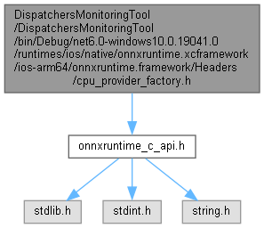

CI-FirstResponders
Loading...
Searching...
No Matches
Variables
cpu_provider_factory.h File Reference
#include "
onnxruntime_c_api.h
"
Include dependency graph for cpu_provider_factory.h:

Go to the source code of this file.
Variables
ORT_EXPORT
ORT_ALL_ARGS_NONNULL
Variable Documentation
◆
ORT_ALL_ARGS_NONNULL
ORT_EXPORT
ORT_ALL_ARGS_NONNULL
Parameters
use_arena
zero: false. non-zero: true.
DispatchersMonitoringTool
DispatchersMonitoringTool
bin
Debug
net6.0-windows10.0.19041.0
runtimes
ios
native
onnxruntime.xcframework
ios-arm64
onnxruntime.framework
Headers
cpu_provider_factory.h
Generated by
1.9.6
 1.9.6
1.9.6